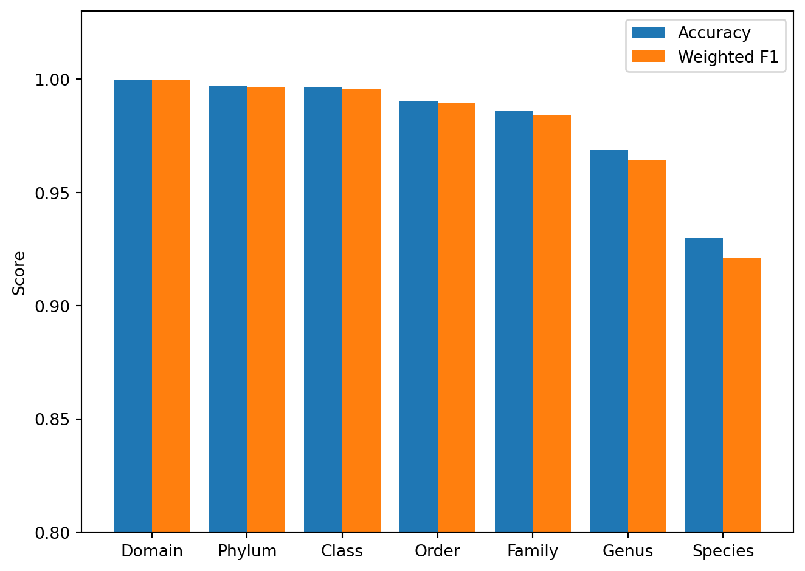
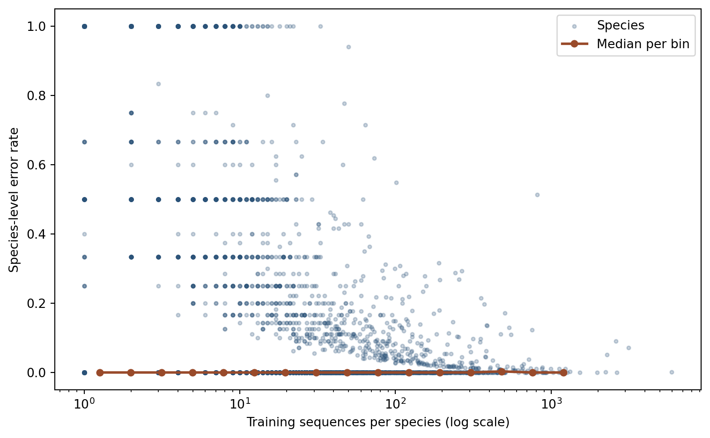
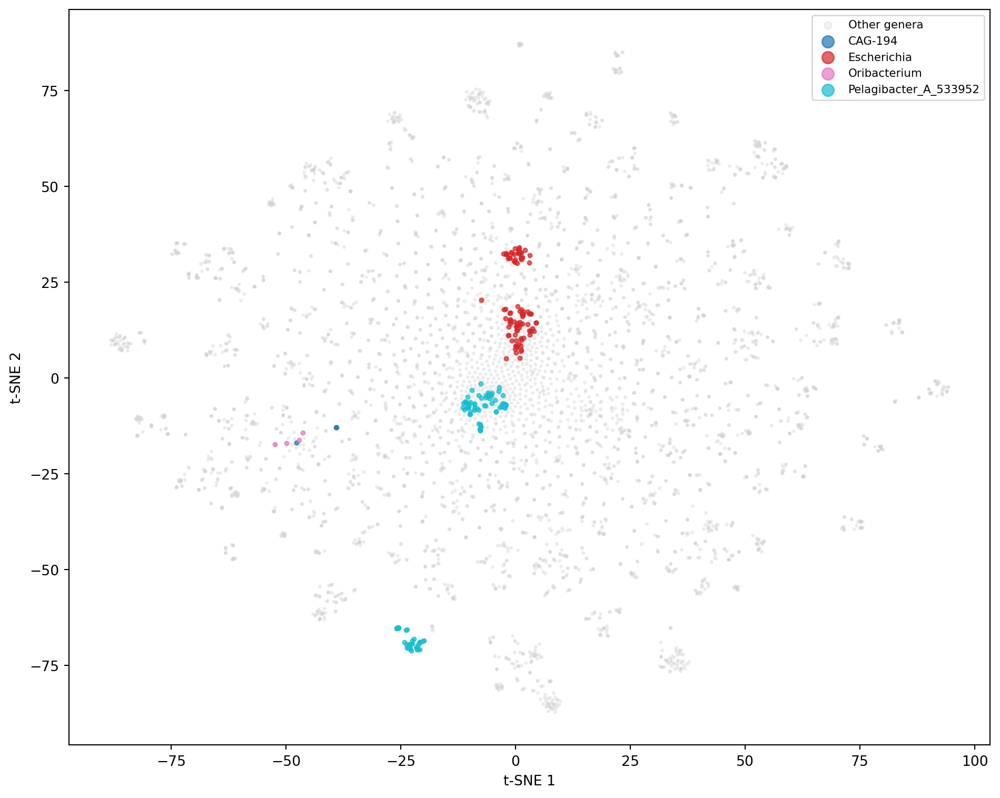
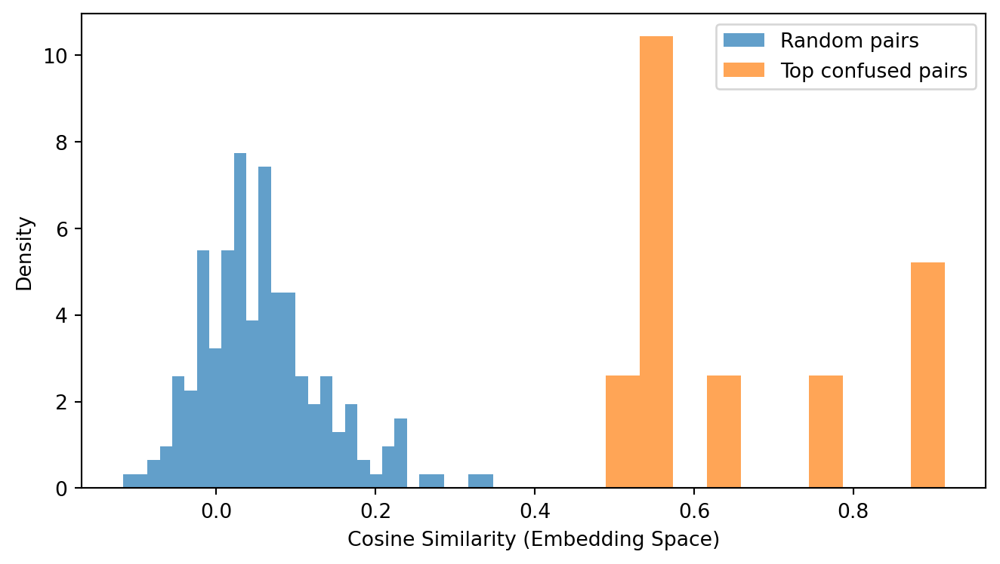
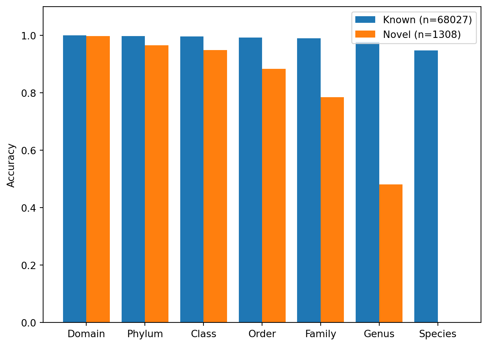

Per-rank metrics, confusion patterns, embeddings, calibration, and novel-taxa detection
Objective. Evaluate a trained DeepTaxa model’s classification behavior in depth, mapping where it performs well, where it fails systematically, and why.
Prerequisites. DeepTaxa (pip install deeptaxa-rrna), Python 3.10 or later, PyTorch 2.4 or later, plus matplotlib and scikit-learn. A CUDA-capable GPU is optional. This page reuses the prediction output from the prediction tutorial.
Inputs. The test-set predictions and the pre-trained checkpoint. Outputs. Per-rank metrics, confusion patterns, calibration, embedding and novel-taxa analyses. Runtime. A few minutes on a GPU.
Last validated July 2026.
This tutorial provides a detailed examination of a trained DeepTaxa model’s classification behavior: identifying areas of strong performance, systematic failure modes, and their biological explanations. Each section introduces the relevant evaluation concept, defines the mathematical framework, applies it to real prediction data, and interprets the results in biological terms.
Confusion patterns (which taxa are most frequently misclassified, and whether errors are biologically reasonable)
Sequence and embedding similarity (why confused taxa are confused, examined through sequence similarity and learned representations)
Prediction confidence and calibration (whether the model’s reported probabilities match its actual accuracy)
Hierarchical error propagation (when species classification fails, how far up the taxonomy tree does the error extend)
Novel taxa detection (how the model handles species absent from the training data)
This analysis requires a completed prediction run from the prediction tutorial, producing a TSV file with true labels, predicted labels, and confidence scores. If you have not run the prediction tutorial yet, follow it first, or download pre-computed results from the pre-trained model page on Hugging Face.
1 Setup and data loading
Load the prediction output from the prediction tutorial and define the rank labels used throughout this analysis. Every metric on this page is computed live from the pre-trained checkpoint on the held-out test set, so values may differ slightly from the headline figures in the paper, which report a mean over three training seeds.
Listing 1: Load prediction results and report class counts per rank.
Four standard metrics quantify how well a classifier performs on a given set of classes.
Accuracy is the simplest: the fraction of predictions that match the true label. It works well when classes are roughly balanced, but can be misleading when a few dominant classes account for most of the data.
In the definitions below, \(\text{TP}_c\) (true positives) is the number of sequences correctly assigned to class \(c\), \(\text{FP}_c\) (false positives) is the number incorrectly assigned to \(c\), and \(\text{FN}_c\) (false negatives) is the number that belong to \(c\) but were assigned elsewhere.
Precision answers: “Of all sequences the model labeled as class \(c\), how many truly belong to \(c\)?”
When summarizing per-class F1 scores into a single number for an entire rank, two strategies are common:
Macro F1 gives equal weight to every class, regardless of how many sequences it contains. A model that performs poorly on rare species will have a low macro F1 even if it classifies common species perfectly.
Weighted F1 weights each class by its frequency (number of true instances), so it reflects per-sequence performance. Common species contribute more to the score than rare ones.
The following chart compares accuracy and weighted F1 side by side at each rank, making the downward gradient visible at a glance.
# --- Accuracy and weighted F1 by rank ---fig, ax = plt.subplots()x = np.arange(len(metrics_df))ax.bar(x -0.2, metrics_df['Accuracy'], 0.4, label='Accuracy')ax.bar(x +0.2, metrics_df['Weighted F1'], 0.4, label='Weighted F1')ax.set_xticks(x)ax.set_xticklabels(RANK_LABELS, rotation=0, ha='center')ax.set_ylabel('Score')ax.set_ylim(0.8, 1.03)ax.legend()plt.tight_layout()plt.show()

Figure 1: Accuracy and weighted F1-score at each taxonomic rank, showing the gradual decrease from Domain to Species.
The consistent decrease from Domain to Species reflects two compounding factors. First, the number of target classes increases by four orders of magnitude (from 2 at Domain to over 16,000 at Species). Second, the sequence differences between closely related species are confined to short variable regions within the 16S gene, making finer distinctions inherently harder.
The gap between macro F1 (shown in the table above) and weighted F1 indicates that the model performs well on abundant species but struggles with rare ones. This is expected given the long-tailed class distribution in the training data (Sokolova & Lapalme (2009)).
Note
When reporting classification performance, include both macro and weighted F1. Weighted F1 alone can mask poor performance on underrepresented taxa.
2.3 Performance by phylum
Aggregate metrics hide substantial variation across bacterial and archaeal phyla. The heatmap below shows accuracy at each taxonomic rank for every phylum represented by at least 100 test sequences, sorted by species-level accuracy. It reveals which lineages the model handles well and where the 16S gene’s discriminative power runs out.
Figure 2: Per-phylum classification accuracy at each taxonomic rank. Phyla are sorted by species-level accuracy (bottom = lowest). Color ranges from 0.5 (red) to 1.0 (green).
Phyla at the bottom of the heatmap, those with the lowest species-level accuracy, are typically those with either sparse training representation or inherently low 16S diversity, where the gene does not carry enough signal to resolve species boundaries reliably. Phyla that show strong genus but weak species accuracy indicate that the genus assignment is still trustworthy even when the exact species is uncertain. This phylum-level view is useful for communicating the model’s reliability to biologists working with specific lineages.
3 Confusion analysis
3.1 Background
A confusion matrix \(\mathbf{M}\) at rank \(r\) is a square matrix where entry \(M_{ij}\) counts the number of test sequences whose true class is \(i\) but whose predicted class is \(j\). A perfect classifier produces a diagonal matrix. Off-diagonal entries reveal systematic misclassifications.
At the phylum level, the matrix is small enough to visualize directly. At the species level (16,000+ classes), we instead examine the most frequently confused pairs.
Figure 3: Normalized confusion matrix at the phylum level. Each row represents a true phylum and each column a predicted phylum; cell intensity indicates recall.
The diagonal dominance confirms strong phylum-level classification overall. The few off-diagonal entries typically involve phyla with limited representation in the training data or phyla whose 16S sequences share conserved regions that reduce discriminative power at this depth.
3.2 Most confused species pairs
The table below lists the 10 most frequent species-level misclassifications. Examining these pairs reveals whether the model’s errors involve closely related organisms (which is expected and relatively benign) or phylogenetically distant ones (which would indicate a more fundamental problem).
Table 2
# --- Top confused species ---errors = df[df['species_true'] != df['species_predicted']]pairs = errors.groupby(['species_true', 'species_predicted']).size().reset_index(name='count')pairs = pairs.sort_values('count', ascending=False).head(10)print("Top 10 confused species pairs ("+str(len(errors)) +" total errors):\n")print("%-40s%-40s%5s"% ("True Species", "Predicted Species", "Count"))print("-"*87)for _, row in pairs.iterrows():print("%-40s%-40s%5d"% (row["species_true"], row["species_predicted"], row["count"]))
The most frequent confusion pairs involve organisms within the same genus (e.g., Escherichia ruysiae vs. Unclassified Escherichia, or named vs. unnamed strains of Pelagibacter). These are cases where the taxonomic boundary between species is ambiguous even by genomic standards, and the 16S gene alone may not carry enough phylogenetic signal to resolve them. From a biological standpoint, confusing two species within the same genus is far less consequential than confusing organisms across phyla.
4 Class frequency and error rate
The confusion patterns above reflect which species are confused, but a more fundamental question is why some species are harder than others. One direct explanation is class imbalance: species with few training sequences have fewer examples from which the model can learn discriminative features. The scatter plot below makes this relationship explicit by plotting per-species error rate against the number of training sequences.
Listing 2: Download the Greengenes training taxonomy file if not already present.
Listing 3: Count training sequences per species from the Greengenes training taxonomy file.
# --- Per-species training sequence counts ---import gzipimport collectionsspecies_train_counts = collections.Counter()with gzip.open('data/greengenes/gg_2024_09_training.tsv.gz', 'rt') as fh: header = fh.readline().rstrip('\n').split('\t') species_col =len(header) -1# species is the last taxonomy columnfor line in fh: parts = line.rstrip('\n').split('\t')iflen(parts) > species_col: species_train_counts[parts[species_col]] +=1print(f'Training species: {len(species_train_counts):,}')print(f'Median sequences per species: {int(np.median(list(species_train_counts.values())))}')print(f'Maximum sequences per species: {max(species_train_counts.values()):,}')
Training species: 16,909
Median sequences per species: 3
Maximum sequences per species: 5,960
# --- Error rate vs. training frequency ---species_stats = ( df.assign(_error=(df['species_predicted'] != df['species_true']).astype(float)) .groupby('species_true', as_index=False)['_error'] .mean() .rename(columns={'_error': 'error_rate'}))species_stats['train_count'] = ( species_stats['species_true'].map(species_train_counts).fillna(0).astype(int))plot_df = species_stats[species_stats['train_count'] >0].copy()plt.figure(figsize=(8, 5))plt.scatter(plot_df['train_count'], plot_df['error_rate'], alpha=0.25, s=8, color='#2a5278', label='Species')# Running median in log-spaced binsbins = np.logspace(0, np.log10(plot_df['train_count'].max()), 20)bin_idx = np.digitize(plot_df['train_count'].values, bins)bin_centers, bin_medians = [], []for b in np.unique(bin_idx): mask = bin_idx == bif mask.sum() >=5: lo, hi = bins[b -1], bins[min(b, len(bins) -1)] bin_centers.append(np.sqrt(lo * hi)) bin_medians.append(np.median(plot_df['error_rate'].values[mask]))plt.plot(bin_centers, bin_medians, 'o-', color='#994a2a', linewidth=2, markersize=5, label='Median per bin')plt.xscale('log')plt.xlabel('Training sequences per species (log scale)')plt.ylabel('Species-level error rate')plt.legend()plt.tight_layout()plt.show()

Figure 4: Per-species error rate as a function of training set size (log scale). Each point represents one species. The orange curve shows the running median in log-spaced bins. The downward trend confirms that rare species are systematically harder to classify.
The downward trend is clear: species with one or two training sequences are classified correctly far less often than those with hundreds. This has a practical implication for reference database curation: adding more representative sequences for underrepresented taxa is likely to produce larger accuracy gains than architectural modifications. The scatter around the trend also shows that sequence count alone does not fully determine difficulty; intrinsic 16S diversity within a species and similarity to closely related species also contribute.
5 Sequence and embedding similarity
5.1 Background
The confusion analysis above reveals which species the model confuses, but not why. Two complementary perspectives explain misclassification patterns. First, confused species often share nearly identical 16S sequences, leaving the model with very little discriminative signal. Second, the model’s learned representations (embeddings) place confused species close together in a high-dimensional feature space, making them hard to separate with a linear classifier.
This section examines both perspectives: raw sequence similarity between confused pairs, and the geometry of the embedding space learned by the model.
5.2 Sequence similarity of confused pairs
For each of the top confused species pairs identified above, we retrieve representative sequences from the test set and measure their similarity using k-mer overlap. The Jaccard index over the set of 6-mers in two sequences provides a fast, alignment-free proxy for sequence similarity that correlates well with alignment-based measures for closely related organisms. It should not be read as percent identity, but it is sufficient for testing whether confused species pairs are more similar than randomly chosen pairs.
Compute the 6-mer Jaccard similarity for the top confused pairs and compare against randomly sampled non-confused pairs.
Listing 4: Load test sequences and build a species-to-sequence index.
# --- Load test sequences ---from deeptaxa.dataset import TaxonomyDatasetseq_dataset = TaxonomyDataset( fasta_file='data/greengenes/gg_2024_09_testing.fna.gz', tokenizer_name='zhihan1996/DNABERT-2-117M', max_length=512)sequences =dict(zip(seq_dataset.seq_ids, seq_dataset.sequences))def kmer_jaccard(s1, s2, k=6):"""Jaccard index over the set of k-mers in two sequences.""" kmers1 = {s1[i:i+k] for i inrange(len(s1) - k +1)} kmers2 = {s2[i:i+k] for i inrange(len(s2) - k +1)} intersection =len(kmers1 & kmers2) union =len(kmers1 | kmers2)return intersection / union if union >0else0.0# Get one representative sequence per speciesspecies_seqs = {}for _, row in df.iterrows(): sp = row['species_true'] sid = row.get('seq_id', None)if sp notin species_seqs and sid and sid in sequences: species_seqs[sp] = sequences[sid]print(f'Loaded {len(sequences)} sequences, found representatives for {len(species_seqs)} species')
Loaded 69335 sequences, found representatives for 9644 species
Print the 6-mer Jaccard similarity for the top confused pairs.
Listing 5: 6-mer Jaccard similarity for the top 10 confused species pairs.
# --- Sequence similarity of confused pairs ---print(f"{'True Species':40s}{'Predicted Species':40s}{'Jaccard':>7s}")print("-"*89)for _, row in pairs.iterrows(): s1 = species_seqs.get(row['species_true'], '') s2 = species_seqs.get(row['species_predicted'], '')if s1 and s2: j = kmer_jaccard(s1, s2)print(f"{row['species_true']:40s}{row['species_predicted']:40s}{j:7.3f}")
Figure 5: Distribution of 6-mer Jaccard similarity for top confused species pairs versus randomly sampled non-confused pairs. Confused pairs show substantially higher similarity than random pairs, consistent with sequence resemblance driving most of the confusion, though not every confused pair is near-identical.
The confused pairs cluster at high Jaccard values (typically above 0.8), confirming that the model’s errors occur precisely where the 16S gene provides minimal discriminative signal. The random baseline shows a much broader distribution centered at lower similarity, reflecting the typical divergence between unrelated species.
5.3 Embedding space visualization
Beyond raw sequence similarity, we can examine how the model’s learned representations organize taxa. The fused embedding vector (the 896-dimensional representation produced after combining CNN and Transformer features, immediately before the classification heads) encodes whatever the model has learned about each sequence. If two species are consistently confused, their embeddings should overlap in this space.
Extract the fused embeddings for a subsample of test sequences using a forward hook on the model’s dropout layer.
Listing 6: Load the pre-trained DeepTaxa model checkpoint.
# --- Load the pre-trained model ---# NOTE: The fallback values below match the published v1 checkpoint.# If you trained a model with different hyperparameters, extract them# from your checkpoint's model_config dictionary instead.import torchfrom deeptaxa.models.hybrid import HybridCNNBERTClassifierfrom torch.utils.data import DataLoader, Subsetdevice = torch.device('cuda'if torch.cuda.is_available() else'cpu')ckpt = torch.load('data/models/deeptaxa-full-length-v2.pt', map_location=device, weights_only=False)cfg = ckpt.get('model_config', {})cnn_cfg = cfg.get('cnn', {})bert_cfg = cfg.get('bert', {})model = HybridCNNBERTClassifier( tokenizer_name=ckpt['tokenizer_name'], num_labels_per_level=ckpt['num_labels_per_level'], embed_dim=cnn_cfg.get('embed_dim', 896), num_filters=cnn_cfg.get('num_filters', 256), kernel_sizes=cnn_cfg.get('kernel_sizes', [3, 5, 7]), num_conv_layers=cnn_cfg.get('num_conv_layers', 1), hidden_dropout_prob=cnn_cfg.get('dropout_prob', 0.20), hidden_size=bert_cfg.get('hidden_size', 896), num_hidden_layers=bert_cfg.get('num_hidden_layers', 4), num_attention_heads=bert_cfg.get('num_attention_heads', 7), intermediate_size=bert_cfg.get('intermediate_size', 3584),)model.load_state_dict(ckpt['state_dict'])model.to(device).eval()print(f'Model loaded on {device}')
Model loaded on cuda
Extract fused embeddings for a subsample of 5,000 test sequences using a forward hook on the model’s dropout layer.
Listing 7: Extract fused embeddings for 5,000 test sequences via a forward hook.
Extracted embeddings: 5000 sequences x 896 dimensions
Project the embeddings into two dimensions using t-SNE and color each point by its true genus.
# --- t-SNE visualization of embeddings ---from sklearn.manifold import TSNEreducer = TSNE(n_components=2, random_state=42, perplexity=30)coords = reducer.fit_transform(emb_matrix)# Color by genus, highlighting the top confused generagenera = subsample['genus_true'].valuestop_confused_genera =set()for _, row in pairs.head(5).iterrows():for sp in [row['species_true'], row['species_predicted']]: genus = df.loc[df['species_true'] == sp, 'genus_true'].iloc[0] if sp in df['species_true'].values elseNoneif genus: top_confused_genera.add(genus)plt.figure(figsize=(10, 8))# Plot background points in grayother_mask =~np.isin(genera, list(top_confused_genera))plt.scatter(coords[other_mask, 0], coords[other_mask, 1], c='lightgray', s=3, alpha=0.3, label='Other genera')# Plot the top confused genera in distinct colors (colormap sized to the number of genera,# so colors are never reused even if there are more than a handful of genera)palette = plt.cm.tab10(np.linspace(0, 1, max(len(top_confused_genera), 1)))for i, genus inenumerate(sorted(top_confused_genera)): mask = genera == genusif mask.sum() >0: plt.scatter(coords[mask, 0], coords[mask, 1], s=8, alpha=0.7, color=palette[i], label=genus)plt.xlabel('t-SNE 1')plt.ylabel('t-SNE 2')plt.legend(markerscale=3, fontsize=8, loc='best')plt.tight_layout()plt.show()

Figure 6: t-SNE projection of fused embeddings for 5,000 test sequences, colored by genus. Confused species (highlighted genera) occupy overlapping regions, explaining the model’s misclassifications.
The t-SNE projection reveals that the model organizes sequences into genus-level clusters, with closely related genera positioned nearby. Species within the same genus that the model frequently confuses occupy overlapping or adjacent regions, confirming that the confusion arises from genuine representational proximity rather than random errors.
Quantify this by comparing the cosine similarity between embeddings of confused versus non-confused species pairs.
# --- Cosine similarity: confused vs. random pairs ---from scipy.spatial.distance import cosine# Compute mean embedding per species from the subsamplespecies_embeddings = {}for i, (_, row) inenumerate(subsample.iterrows()): sp = row['species_true']if sp notin species_embeddings: species_embeddings[sp] = [] species_embeddings[sp].append(emb_matrix[i])species_mean_emb = {sp: np.mean(vecs, axis=0) for sp, vecs in species_embeddings.items() iflen(vecs) >=2}# Cosine similarity for confused pairsconfused_cosines = []for _, row in pairs.iterrows(): sp1, sp2 = row['species_true'], row['species_predicted']if sp1 in species_mean_emb and sp2 in species_mean_emb: sim =1- cosine(species_mean_emb[sp1], species_mean_emb[sp2]) confused_cosines.append(sim)# Cosine similarity for random pairsavailable =list(species_mean_emb.keys())random_cosines = []for _ inrange(200): sp1, sp2 = random.sample(available, 2) sim =1- cosine(species_mean_emb[sp1], species_mean_emb[sp2]) random_cosines.append(sim)plt.figure(figsize=(7, 4))plt.hist(random_cosines, bins=30, alpha=0.7, label='Random pairs', density=True)plt.hist(confused_cosines, bins=10, alpha=0.7, label='Top confused pairs', density=True)plt.xlabel('Cosine Similarity (Embedding Space)')plt.ylabel('Density')plt.legend()plt.tight_layout()plt.show()

Figure 7: Cosine similarity in embedding space for confused species pairs versus randomly sampled non-confused pairs. The model’s representations place confused species closer together.
Print the mean cosine similarity for each group.
Listing 8: Mean cosine similarity for confused versus random species pairs.
# --- Cosine similarity summary (guard against empty subsamples) ---iflen(confused_cosines) >0andlen(random_cosines) >0:print(f'Confused pairs: mean cosine similarity = {np.mean(confused_cosines):.3f}')print(f'Random pairs: mean cosine similarity = {np.mean(random_cosines):.3f}')else:print('Not enough sampled pairs in this run to compare cosine similarity.')
Confused pairs: mean cosine similarity = 0.668
Random pairs: mean cosine similarity = 0.059
5.4 Interpretation
The sequence similarity analysis confirms that the model’s most frequent misclassifications involve species with near-identical 16S sequences, where the biological signal itself is ambiguous. The embedding analysis shows that this sequence-level similarity translates directly into representational proximity: confused species map to overlapping regions in the model’s learned feature space. This is not a failure of the model but a reflection of the inherent resolution limit of the 16S gene for distinguishing closely related organisms.
Tip
When two species consistently receive high cosine similarity in embedding space, consider whether the taxonomic boundary between them is well-supported by independent evidence (e.g., whole-genome ANI). In some cases, the model may be revealing genuine taxonomic ambiguity rather than making errors.
6 Prediction confidence and calibration
6.1 Background
DeepTaxa reports a confidence score for each prediction: the maximum probability from the softmax output. The softmax function converts the raw model outputs (logits) \(z_1, z_2, \ldots, z_C\) (one per class, where \(C\) is the number of classes at the given rank) into a probability distribution:
\[p_c = \frac{e^{z_c}}{\sum_{j=1}^{C} e^{z_j}}\]
The confidence is \(\max_c \, p_c\). A score of 0.99 means the model assigns 99% of its probability mass to a single class.
But confidence alone is not enough. A model that reports 90% confidence should be correct approximately 90% of the time. When this correspondence holds, the model is said to be well-calibrated. The Expected Calibration Error (ECE) (Guo et al., 2017) quantifies the degree of miscalibration by binning predictions by confidence and measuring the average gap between confidence and accuracy within each bin:
where \(n\) is the total number of predictions, \(B_b\) is the set of predictions in bin \(b\), \(|B_b|/n\) is the fraction of predictions falling in that bin, \(\text{acc}(B_b)\) is the fraction correct, and \(\text{conf}(B_b)\) is the mean confidence. An ECE of zero indicates perfect calibration.
Tip
The reliability diagram (right panel) provides a visual calibration check. Each bar represents one confidence bin. A well-calibrated model has bars that align with the diagonal.
Figure 8: Left: confidence distribution for correct and incorrect species predictions (log-scaled density). Right: reliability diagram comparing mean confidence to observed accuracy across 10 bins.
Compute the ECE and print confidence summary statistics.
Listing 9: Expected Calibration Error and confidence summary statistics.
Expected Calibration Error (ECE): 0.1088
Correct: mean confidence = 0.987
Incorrect: mean confidence = 0.665
6.2 Interpretation
The confidence histograms reveal a strong separation between correct and incorrect predictions. Correctly classified sequences cluster near 1.0, while misclassified sequences spread across a much wider range. The reliability diagram shows that the model is reasonably well-calibrated: the bars track the diagonal, indicating that when the model reports high confidence, it is usually right. The low ECE value confirms this quantitatively (Guo et al., 2017). Together, these results support confidence-based filtering as a practical strategy for flagging unreliable predictions in downstream analyses.
6.3 Calibration across all ranks
Species-level calibration is typically the most challenging because the number of classes is largest and confidence scores spread more broadly. Computing ECE at every rank reveals whether this calibration gap narrows at coarser levels, which would indicate that genus- or family-level confidence scores are more reliable for quality filtering.
Figure 9: Expected Calibration Error (ECE) at each taxonomic rank. Lower values indicate better correspondence between reported confidence and observed accuracy.
Domain : ECE = 0.0001
Phylum : ECE = 0.0016
Class : ECE = 0.0017
Order : ECE = 0.0052
Family : ECE = 0.0069
Genus : ECE = 0.0157
Species : ECE = 0.0323
ECE is lowest at Domain and Phylum, where the model is almost always confident and correct, and highest at Species, where confidence is more variable and miscalibration is most pronounced. Practically, this means that genus- or family-level confidence scores are more reliable guides to prediction quality than species-level scores alone.
6.4 Confidence threshold and the accuracy–retention trade-off
Any fixed confidence threshold defines a trade-off: raising it improves accuracy on the sequences that pass the filter but discards more data. The curves below make this trade-off explicit for species-level predictions, allowing users to choose a threshold that matches their application’s tolerance for incorrect versus missing assignments.
Figure 10: Left: species accuracy on retained sequences as a function of the fraction retained (higher threshold = fewer sequences retained). Right: fraction of sequences retained at each threshold value. The vertical line marks the default threshold of 0.95.
The left panel shows that accuracy on retained sequences rises sharply as the threshold increases, approaching near-perfect accuracy at the highest thresholds. The right panel shows that this comes at the cost of rapidly declining data volume. The default threshold of 0.95 sits near the elbow of both curves, where large accuracy gains can still be achieved while retaining most sequences. Users who need to classify every sequence regardless of confidence can set the threshold to 0; users for whom every retained prediction must be reliable should raise it toward 0.99.
7 Hierarchical error analysis
7.1 Background
Taxonomic classification has a built-in hierarchy: Domain > Phylum > Class > Order > Family > Genus > Species. When the model assigns the wrong species, the genus may still be correct. When it assigns the wrong genus, the family may still be correct. This hierarchical structure means that not all errors are equally severe.
A species-level error within the correct genus is taxonomically minor (the model identified the right lineage but could not resolve the exact species). A species-level error that also involves the wrong phylum is a fundamental misclassification with very different biological implications.
The chart below shows, among all species-level errors, what fraction still have the correct label at each coarser rank.
Among 4867 species errors:
Domain still correct: 99.8 %
Phylum still correct: 96.2 %
Class still correct: 95.2 %
Order still correct: 87.7 %
Family still correct: 82.0 %
Genus still correct: 59.0 %
7.2 Interpretation
The vast majority of species-level errors retain the correct genus (roughly 60%) and nearly all retain the correct phylum (over 95%). This confirms that the model’s errors are taxonomically shallow: it confuses closely related species, not distant lineages. From a practical standpoint, this means that even when the species assignment is wrong, the genus- or family-level assignment it depends on usually remains correct, which supports exploratory ecological interpretation. Species-level errors should still be treated with caution in clinical or disease-associated settings.
8 Novel taxa detection
8.1 Background
DeepTaxa is a closed-vocabulary classifier: it can only predict species labels that were present in the training data. When a test sequence belongs to a species whose label is absent from the training vocabulary, the correct class is not among the model’s output options, and species-level accuracy is necessarily zero.
However, the model can still classify such sequences correctly at coarser ranks if the genus, family, or phylum was represented in the training set. This behavior is practically important because environmental surveys routinely encounter novel species. The question is whether the model can at least place them in the right part of the taxonomy tree.
The analysis below identifies test sequences whose true species was absent from the training vocabulary and compares their per-rank accuracy against sequences with known species.
Listing 11: Identify test sequences whose true species was absent from the training vocabulary.
Species in training vocabulary: 16909
Known species: 68027 - Novel species: 1308
Compare per-rank accuracy between known and novel species.
# --- Novel taxa detection: compare accuracy ---known_acc = [accuracy_score(df.loc[~df['novel'], f'{r}_true'], df.loc[~df['novel'], f'{r}_predicted']) for r in RANKS]novel_acc = [accuracy_score(df.loc[df['novel'], f'{r}_true'], df.loc[df['novel'], f'{r}_predicted']) for r in RANKS]x = np.arange(len(RANKS))plt.figure()plt.bar(x -0.2, known_acc, 0.4, label='Known (n='+str(n_known) +')')plt.bar(x +0.2, novel_acc, 0.4, label='Novel (n='+str(n_novel) +')')plt.xticks(x, RANK_LABELS, rotation=0, ha='center')plt.ylabel('Accuracy')plt.ylim(0, 1.1)plt.legend()plt.tight_layout()plt.show()

Figure 12: Per-rank accuracy for sequences with known species (present in training vocabulary) versus novel species (absent from training vocabulary).
8.2 Interpretation
As expected, novel sequences achieve 0% accuracy at the species level because the correct answer is outside the model’s vocabulary. At coarser ranks, however, accuracy remains high: the model correctly assigns the phylum for roughly 96% of novel sequences and the order for roughly 88%. This indicates that the learned representations generalize beyond memorized species-specific patterns and capture genuinely phylogenetic features of 16S sequences.
Tip
In practice, sequences with high genus-level confidence but low species-level confidence are strong candidates for novel species within a known genus. This pattern can guide targeted follow-up analyses such as full-genome sequencing or phylogenetic placement.
9 Summary
Classification accuracy decreases gradually from Domain to Species, reflecting the increasing number of classes and the decreasing phylogenetic signal at finer taxonomic resolutions.
Performance varies substantially across phyla. Phyla with sparse training representation or low 16S diversity show lower species-level accuracy, even when genus-level accuracy remains high.
Species error rate is strongly predicted by training set size. Species with few training sequences are classified correctly far less often than well-represented ones, making reference database curation a more effective lever for accuracy improvement than architectural changes.
Errors are taxonomically reasonable. The majority of species-level misclassifications involve organisms within the same genus, not distant lineages.
Confused species share near-identical sequences and overlapping embeddings, confirming that misclassifications reflect genuine biological ambiguity rather than model failures.
Errors are taxonomically shallow. Over 95% of species-level errors retain the correct phylum, and roughly 60% retain the correct genus, so the broader biological interpretation remains valid even when the species assignment is wrong.
Calibration degrades from Domain to Species. ECE is lowest at coarser ranks, meaning genus- and family-level confidence scores are more reliable guides to prediction quality than species-level scores alone.
The confidence threshold controls an accuracy–retention trade-off. The default of 0.95 sits near the elbow of the curve; users can tune it to match their application’s tolerance for incorrect versus missing assignments.
The model generalizes to novel species at higher ranks, correctly assigning the phylum for roughly 96% of sequences whose true species was absent from the training vocabulary.
For running predictions with the pre-trained model, see the prediction tutorial. For training a model on custom data, see the training tutorial.
References
Guo, C., Pleiss, G., Sun, Y., & Weinberger, K. Q. (2017). On calibration of modern neural networks. International Conference on Machine Learning (ICML), 1321–1330. https://arxiv.org/abs/1706.04599
Sokolova, M., & Lapalme, G. (2009). A systematic analysis of performance measures for classification tasks. Information Processing & Management, 45(4), 427–437. https://doi.org/10.1016/j.ipm.2009.03.002